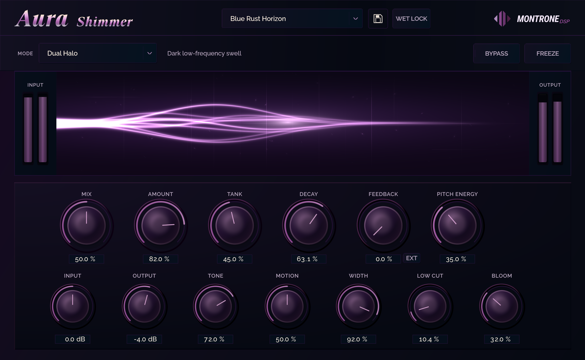
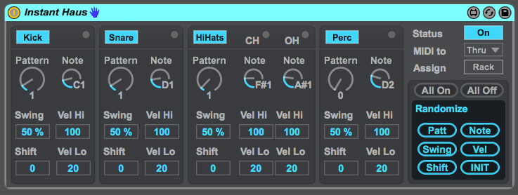

I tested the Martello device and sounded very nice.

Shimmer and space processing with depth, motion, and harmonic bloom.
- €14.95 · 50% off
- v1.2.0
- Mac VST3
- Windows VST3
- Linux VST3

Reverb that behaves like an instrument - preserve the source, then let the tail become its own musical element.

Martello Bundlev1.3.0
Built for the grid
Martello is built around synthesized drum voices with a strong resonator and modal-synthesis influence.
Its sound is shaped by the idea of struck objects, vibrating bodies, wood, metal, membranes, and physical percussion behavior. Martello and MartelloX2 are focused drum synthesizers, not sample players. Design kicks, snares, hats, and percussion with immediate control, per-voice model selection, and optional dual-engine routing for full-kit patterns in one plugin.

- Models25 per voice
- Voices3 voices · 6 in X2
- ModulationLFO, Envelope, or Knob Wizard
- ThemesDark and light
Model engine
Every voice chooses its own physics.
Switch modes and the control panel instantly reconfigures to expose the parameters of the selected engine.

- Classic
- Classic Extended
- Classic Hats
- Digital
- Analog
- Digital+
- Toms
- Clap
- Wood
- Ride
- Cymbal
- Cowbell
- Low Bongo
- Mid Bongo
- High Bongo
- Glass Clave
- Tambourine
- Maracas
- Open Percussion Extension
- Charlie
- Metallic
- Robots
- Robots Expert
Release ValidationQuality checks
Release Validation
Every MontroneDSP release is checked through automated validation, internal signal analysis, stress testing, and human musical testing.
Validation includes pluginval correctness level 10, sample-rate testing up to 192 kHz, automation stress tests, repeated load/unload checks, multi-instance sessions, save/reload verification, preset recall, MIDI triggering, rapid parameter changes, offline rendering, and internal monitoring for signal integrity.
MartelloX2 is additionally tested for dual-engine behavior, multi-output routing, heavier session conditions, and real-world usability inside actual DAW projects.
FeedbackFrom the field
What artists are saying.
Dev storySince 2014
Where Martello came from.
Martello is an idea that started forming around 2014, when I was exploring Eurorack synthesis, resonators, and modal synthesis. I was always drawn to those tones because they felt more physical, natural, and alive than many traditional electronic drum sounds. They had the feeling of objects being struck, vibrating, and reacting in a real space.
For a long time, I tried to reach that feeling with samples, but it never really worked for me.
Over time, the idea started moving more clearly toward synthesized drums, using resonators and physical approaches rather than relying only on samples.
That direction became the foundation of Martello: a focused drum instrument made to feel immediate, responsive, and alive. While I was also working on a much more complex instrument, Martello naturally became something more direct, simple to understand, quick to use, and centered on sound.
The interface follows the same idea: no complicated submenus, with the main controls visible and ready to shape. Martello is built around limitations, but in a creative way, giving artists a starting point to design their own drum kits and then place them inside their own effects, space, and workflow.
Why Martello has no sequencer
We deliberately chose not to build a sequencer into Martello. Adding one would have changed the nature of the instrument, shifting attention away from its synthesis panels and toward an internal workflow that could never suit every artist. Martello is meant to remain open: a sound-design instrument that responds naturally to the sequencer, controller, generative system, or performance method you already prefer.
Tip 1: For Ableton Live users, Martello and Martello X2 pair especially well with Instant Haus by Alexkid.

This Max for Live device can quickly generate musical drum patterns while still offering detailed control over individual parts, velocity, swing, timing shifts, variation, and randomization. Instead of locking Martello inside a fixed sequencer, this combination lets one device concentrate on rhythm and movement while Martello remains focused entirely on synthesis and sound. Instant Haus is now officially discontinued, but it remains an excellent companion for users who already have access to it.
Load Martello after Instant Haus, route its generated MIDI notes to the appropriate voices, and an initial groove can emerge almost immediately. From there, every sound can be reshaped directly from Martello’s front panel, turning the generated rhythm into a personal drum kit rather than a finished preset. This reflects the broader idea behind the instrument: provide a strong and immediate starting point, then leave enough space for the artist to transform it.
Tip 2: The Kick-and-Bass Trick
Load Martello X2 and select the same drum model for Voice 1 and Voice 4. Digital, Analog, and the Legacy synthesis models are especially effective for this technique. Then reduce the Punch control on Voice 4 to nearly zero. Voice 1 can remain the main kick, while Voice 4 becomes a sustained bass layer derived from the same synthesis model.
Because both sounds come from closely related sources, the kick and bass naturally share the same tonal character. They can be tuned perfectly together for a tight, unified low end, or deliberately separated to create more tension and movement.
With traditional drum machines, achieving this degree of control often required circuit modifications, resampling, or additional processing. In Martello X2, the same idea is immediate: one voice provides the impact, while the other transforms the underlying drum synthesis into bass.
This technique is the conceptual foundation of the Jak2 preset, inspired by a nearly forgotten Naughty Dog masterpiece. Load the preset, hear the kick-and-bass relationship in action, then adjust the tuning, decay, and balance to make the room as bass-heavy as you like.
Tip 3: Multi-Output Processing
We strongly recommend using Martello X2 in multi-output mode. Routing each voice to its own channel gives you much better control over gain staging, balance, automation, and processing, while opening the instrument up to a far more creative multitrack workflow.
In minimal, abstract, and experimental forms of house and techno, a single percussion sound can become much more than part of the rhythm. It can become the lead instrument, the main hook, or even the defining element of the entire track. With separate outputs, each Martello voice can be treated deliberately with your favourite reverbs, delays, distortion, modulation, or more complex effect chains, allowing the instrument to sit at the centre of the production rather than simply behind it.
We deliberately chose not to include built-in effects in Martello. We did not want to turn it into another generic all-in-one instrument filled with interchangeable processing. Instead, Martello focuses on synthesis and leaves space for you to shape its sounds using your own effects, your own spaces, and your own signal chains. This allows the instrument to enter your sonic world rather than forcing you into ours.
Tip 4: The Analog Stage
If your studio includes an analog mixer or other outboard equipment, we strongly recommend routing Martello X2’s individual outputs from your DAW into separate hardware channels. This gives you immediate hands-on control over every voice, while adding the sonic colour, saturation, and natural response of your analog signal path.
Working this way also makes it possible to manipulate the sounds quickly with hardware EQ, compression, distortion, sends, and external effects. Small movements on the mixer can radically transform the rhythm, opening up an almost endless range of combinations and encouraging a more physical and spontaneous approach to sound design.
The result is something close to an expandable modular drum machine, but with the affordability and convenience of a multi-instance software instrument. You retain preset storage, complete project recall, automation, and the ability to reopen a session exactly as you left it, while gaining the tactile control and character of an analog studio workflow.
Martello provides the synthesis engine; the mixer and outboard chain become an extension of the instrument.